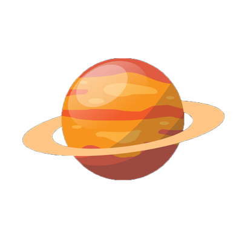
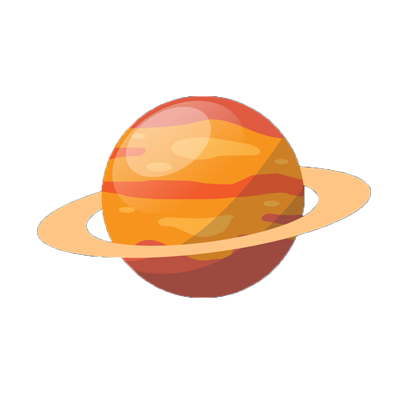

URANUS
ยูเรนัส (Uranus)บรรยากาศของดาวยูเรนัสประกอบด้วยไฮโดรเจน 83%, ฮีเลียม 15% และมีเทน 2% ดาวยูเรนัสมีสีฟ้าเนื่องจากแก๊สมีเทนดูดกลืนสีแดงและสะท้อนสีน้ำเงิน ดาวยูเรนัสมีวงแหวนเช่นเดียวกับดาวเคราะห์ชั้นนอกดวงอื่นๆ วงแหวนของดาวยูเรนัสมีความสว่าง ไม่มาก เนื่องจากประกอบด้วยอนุภาคขนาดเล็ก มีขนาดตั้งแต่ฝุ่นผงจนถึง 10 เมตร ดาวยูเรนัสมีดวงจันทร์บริวารอย่างน้อย 27 ดวง ดวงจันทร์ขนาดใหญ่ ที่มีรูปร่างเป็นทรงกลม ได้แก่ มิรันดา แอเรียล อัมเบรียล ไททาเนีย และ โอเบรอน